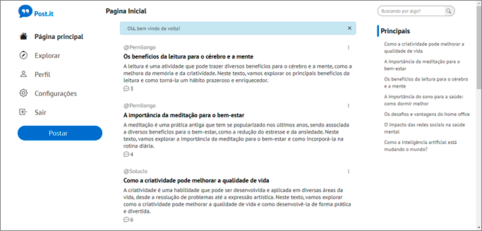

Lucas Manoel
Desenvolvedor Back-end Junior
Iniciei na programação em 2018 ao ingressar no Centro Universitário Facol, onde cursei Sistemas de Informação durante seis períodos, tendo trancado no período da pandemia, desde então, tenho estudado por meio de cursos online, criado projetos pessoais para o meu portfólio e desenvolvido dois jogos para a Play Store.
Competências
- Javascript
- Node.js
- MySQL
- MongoDB
Outras competências
- Express
- React
- Handlebars
- HTML
- CSS
Projetos em destaque

Clone do Twitter
Express, Sequelize, e Handlebars
Um clone simples do Twitter com publicação apenas de texte com fins meramente educativo, utilizando Express, Sequelize, e Handlebars utilizando o padrão MVC.
Abrir no GithubCalculadora
Javascript, HTML, CSS
To-Do List
Node.js, express, sequelize, handlebars
Conversão de Escala Termométrica
Javascript, HTML, CSS